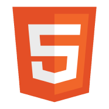
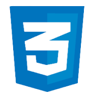
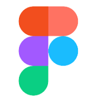
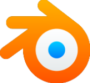
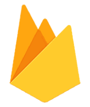

Zdravím, jsem
Adam Rana
Začínající Front-end & Back-end Developer

Dovednosti
JavaScript

HTML
CSS
Figma
Blender
Firebase
Jazyky
Čeština
rodilý mluvčí
Angličtina
na úrovni B1
Osobní údaje
Věk
15let
Bydliště
Praha 5, Slivenec
Aktuální škola
Fzs Barrandov 2
Kontakty
Zkušenosti
Kresba a animace
Již v deseti letech jsem se nadchl pro malování a animaci na tabletu. Udělal jsem desítky výtvorů v různých programech. Kresbu a animaci považuji za velmi důležité, protože mi otevřely dveře do světa IT. Viz sekce projekty.
Blender
V dvanácti letech jsem se rozhodl začít se softwarem Blender na 3D modelování. Ten jsem se pomocí online kurzu naučil ovládat vcelku dobře. Viz sekce projekty.
Programování
V tuto chvíli se zajímám hlavně o programování webových aplikací v jazycích HTML, CSS, JavaScript a jejich propojení s backendem. Programovat jsem začal před půl rokem, a od té doby je to můj hlavní zájem. I když ještě nejsem dlouho v oboru, realizoval jsem už několik projektů. S každým novým projektem získávám nové dovednosti a zlepšuji se. S programováním chci nadále pokračovat a dělat rozsáhlejší projekty. To je jeden z důvodů proč se hlásím na Vaši školu. Viz sekce projekty.
Hudba a sport
Hudba
- Začátek s flétnou ve věku pěti let a studium po dobu pěti let.
- Vyzkoušení altové flétny na jeden rok.
- Přechod ke hře na hoboj s dalšími třemi lety studia.
- Aktuálně hra na saxofon.
Sport
- Od mala jsem vyzkoušel mnoho sportovních kroužků.
- Chodil jsem např. na florbal, basketbal, atletiku, squash či lezení.
- Již na sportovní kroužky nechodím, ale často si rád něco zahraju s kamarády nebo rodinou.
Personalita
Rád pracuji v týmu a pomáhám lidem okolo mě. Jsem spíše extrovertní člověk, ale záleží, jaký mám zájem se s danými lidmi bavit.
Budoucí plány
Chci se dostat na vaší školu a tam se zapojit do nějakého vzrušujícího projektu. V dospělosti se chci věnovat něčemu velkému a světu prospěšnému.
"Kdo nechce hledá důvody, kdo chce hledá způsoby"